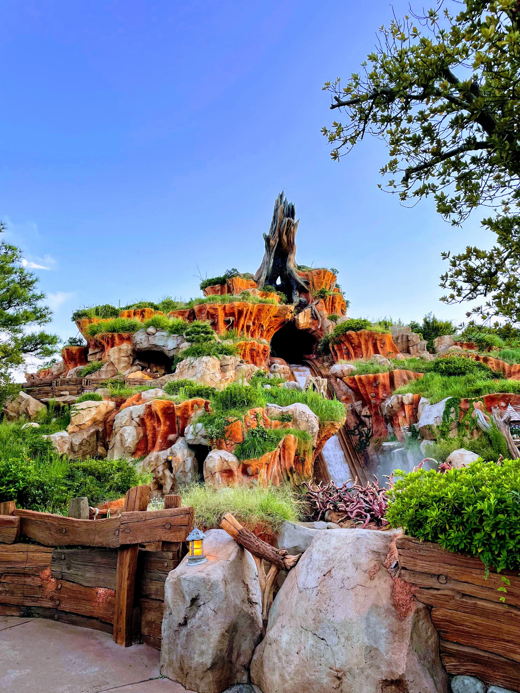
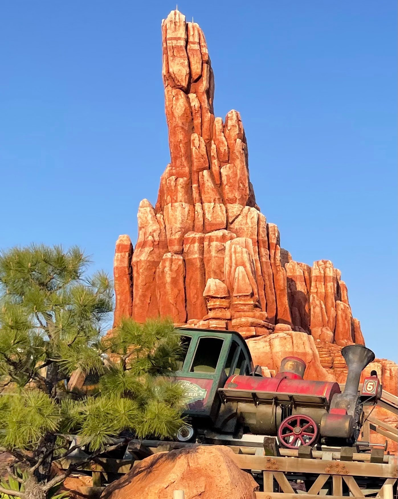
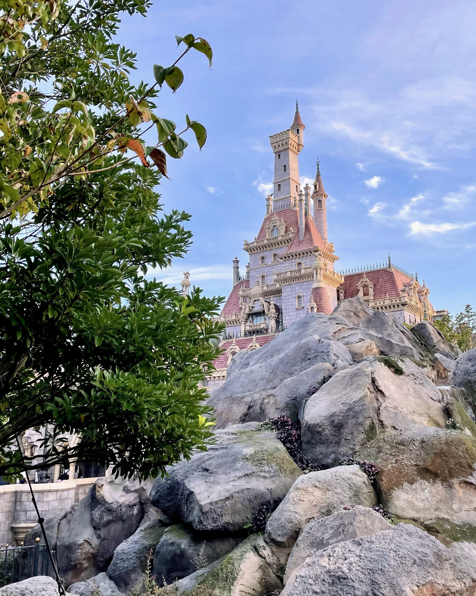
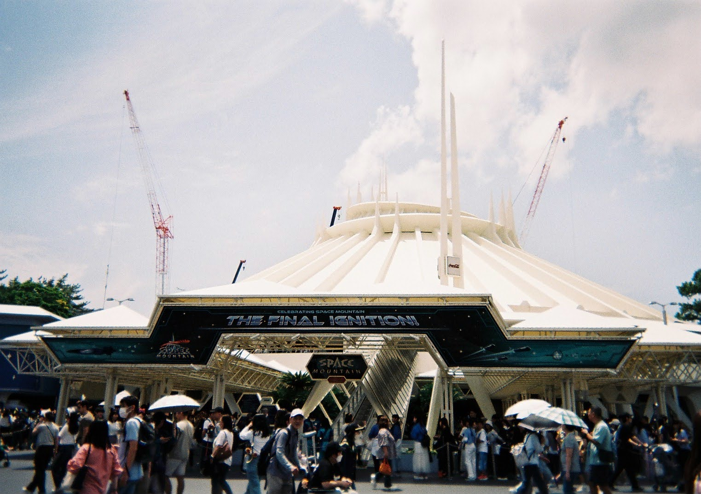
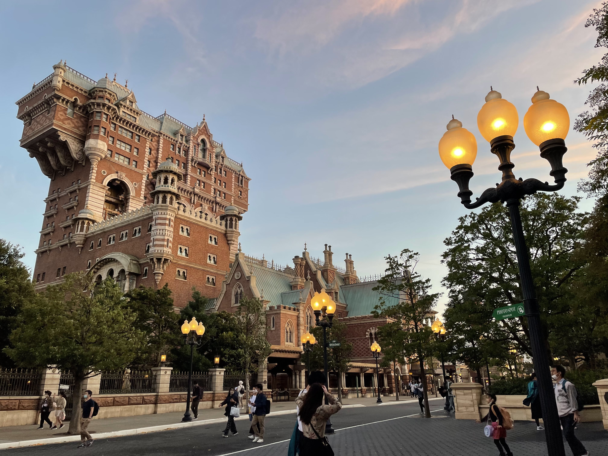
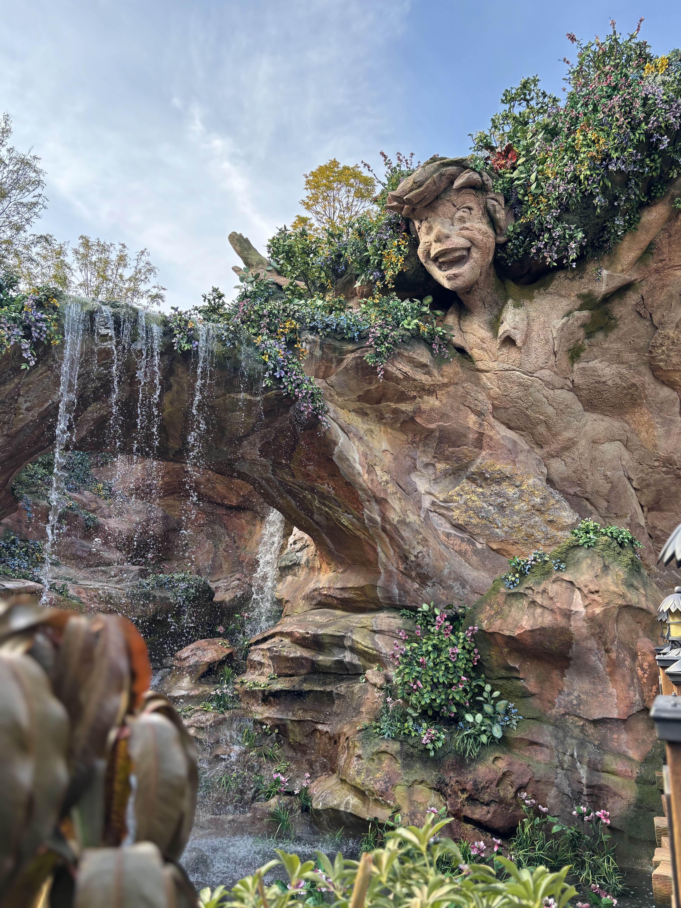
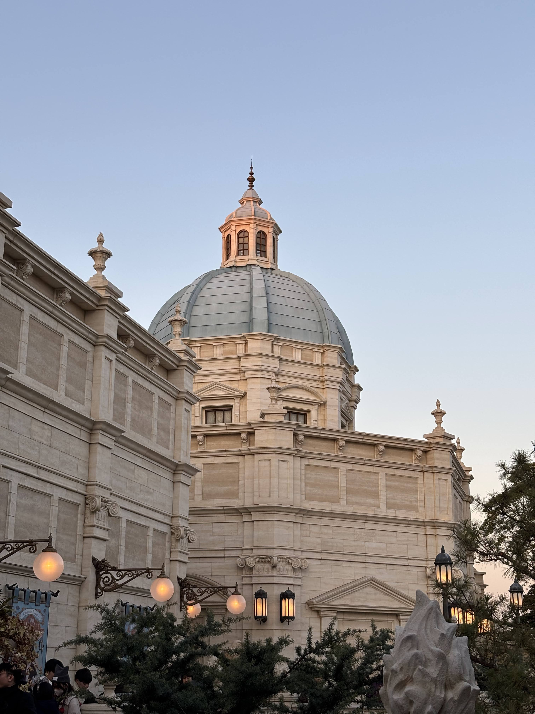
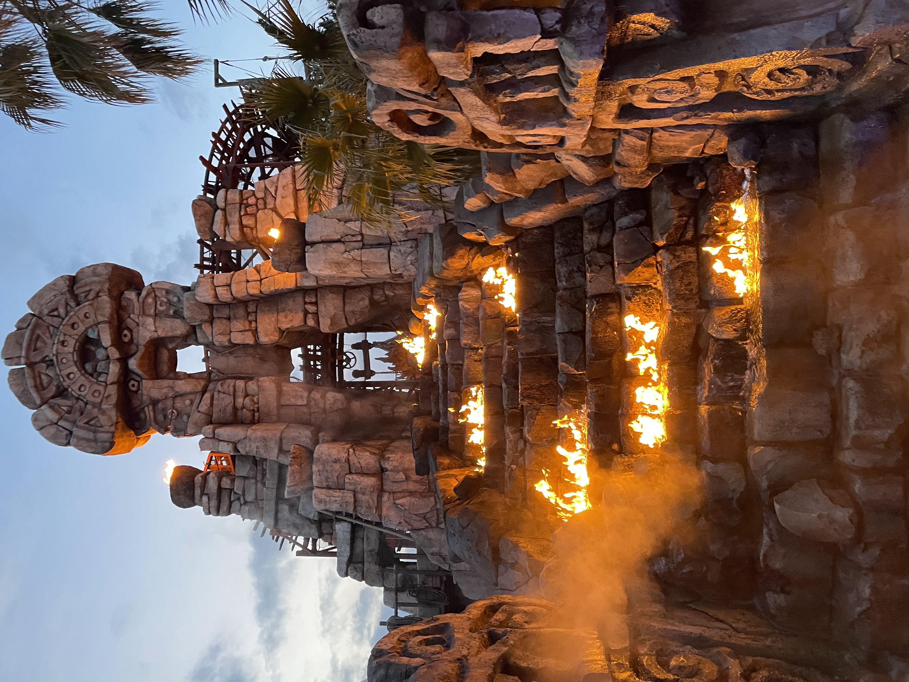
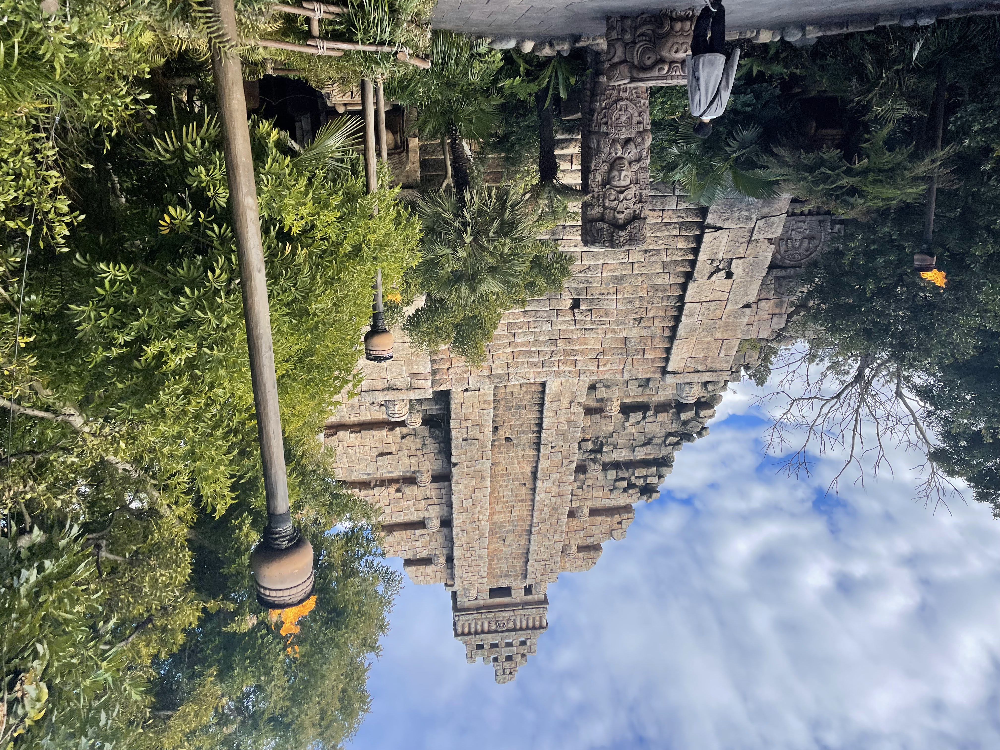

TERU_LUCE_
Profile"Disneyland will never be completed.
It will continue to grow as long as there is imagination left in the world." — Walt Disney
「ディズニーランドは永遠に完成しない。世界に想像力がある限り、成長し続けるだろう。」
Exhibits

Splash Mountain
泥地に根づく知恵と、大洪水の忘れ物。アライグマの失敗が引き起こした大洪水から、ブレア・ラビットが命をかけて仕掛けた「最後のはったり」まで、小動物たちの歴史を追う。

Big Thunder Mountain
警告を破りし蒸気の咆哮と、黄金の呪い。ゴールドラッシュに沸いた一人の男の野望と、大自然に宿る「精霊の怒り」が招いたタブルウィード崩壊の歴史を辿る。

Beauty and the Beast
魔法の薔薇が紡ぐ、光と影のフレンチ・ゴシック。フランスの片田舎から「呪われた城」へ誘う空間トリックと、日本独自の所作を宿した愛のものがたり。

Tomorrowland
未来都市が背負った「時間」という名の宿命。スペースマウンテンの初代ロケットの終焉と、スターツアーズに潜む銀河連邦宇宙法のルールに迫る。

Tower of Terror
ニューヨーク1912。大富豪ハリソン・ハイタワー三世の失踪劇と、呪いの偶像シリキ・ウトゥンドゥが招いた一夜の真実。

Sindbad's Voyage
心のコンパスを信じて。シー屈指の傑作へと生まれ変わるまで。

Fantasy Springs
湧き出る精霊の記憶と、公爵夫人の招待状。

Soarin'
19世紀の博物館に秘められた、空を飛ぶ夢の歴史。
S.E.A. Archives
ディズニー最高峰の巨大な大河神話を完全解剖する。

Raging Spirits
古代の神々の禁忌を破り、水の上で炎が燃え盛る不可思議な謎。

Indiana Jones
パコが企てた秘密の魔宮ツアーと、水上飛行機に隠された真相。
The Maihama Chronicle
「本物」を追求し続ける、舞浜の歴史
私たちが訪れる東京ディズニーリゾート（TDR）の背景には、オリエンタルランド（OLC）とウォルト・ディズニー・カンパニーの度重なる対話と、テーマパークづくりへの真摯な取り組みが存在します。
I. アメリカ国外初のディズニーパーク
1983年4月15日、東京ディズニーランド（TDL）は開園しました...
II. 映画スタジオ計画から「海」への方針転換
1992年に「海」をテーマにしたパーク『東京ディズニーシー（TDS）』の開発へと大きく方針を転換することになります。